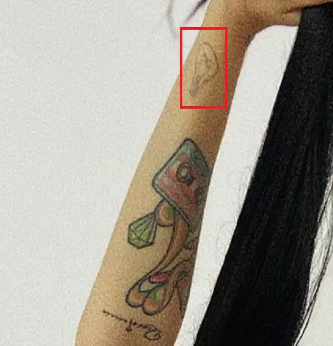
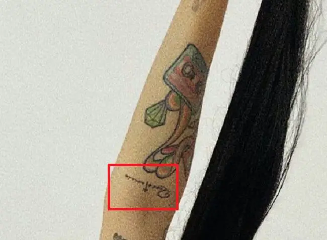
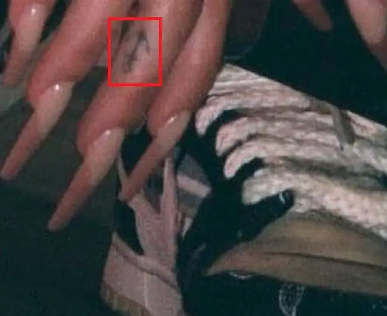
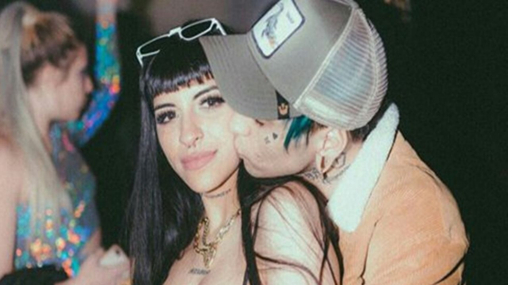

Julieta nació el 16 de diciembre de 1993 en fraile pintado. Creció en una familia pequeña: padre, madre y hermana. Comenzó a cantar a los 11 años. Al principio fue folclore en tarimas jujeñas, animadas por su padre, mientras su hermana, Florencia, participaba en concursos de canto o fiestas del colegio, incentivas por sus profesores. Su interés por la música se hizo enorme, empezando a experimentar en la escuela y en algunas bandas de distintosgéneros a las que puedo pertenecer Cuando termino el colegio estudio cine en Tucumán. Posteriormente, se mudó a la provincia de Buenos Aires con el propósito de estudiar diseño multimedia, aunque su objetivo era la música. Con su primer trabajo luego de terminar la secundaria pago sus primeras salas de grabaciones clips.Empezo su carrera en la cumbia, bajo el nombre artistico de Juli-K, genero en el cual no tuvo demasiado exito. Tambien estuvo en varias bandas de rock donde tuvo sus primeros shows en el cual canto en vivo, pero tampoco tuvo exito. julieta emilia cazzuchelli quiroz (16 de diciembre de 1993), conocida artisticamente como cazzu,es una cantante de trap y reggeton,originaria de fraile pintado, ledesma, Argentina. Es una de las exponentes femenina del trap argentino. cazzu nacio y sew crio en un hogar pequeño,jumto a sus padres pedro cazzuchelli y mariana quiroz, y su hermana mayor florencia. Comenzo a incursionar en el mundo artistico a los onces años, siendo su padre su primera primera influencia musical.Comenzo a estudiar musica a los 14 años. Años despues, empezo a interesarse por el reggeton y ahora tomo el trap como el estilo y la musica que abandera. Ha sido fuertemente cuestionada pues su mensaje asegura que promueve a traves de su musica, la reinvidicacion de la mujer. Varios sectores feministas han rechazado este mensaje.
Julieta nació el 16 de diciembre de 1993 en fraile pintado. Creció en una familia pequeña: padre, madre y hermana. Comenzó a cantar a los 11 años. Al principio fue folclore en tarimas jujeñas, animadas por su padre, mientras su hermana, Florencia, participaba en concursos de canto o fiestas del colegio, incentivas por sus profesores. Su interés por la música se hizo enorme, empezando a experimentar en la escuela y en algunas bandas de distintosgéneros a las que puedo pertenecer Cuando termino el colegio estudio cine en Tucumán. Posteriormente, se mudó a la provincia de Buenos Aires con el propósito de estudiar diseño multimedia, aunque su objetivo era la música. Con su primer trabajo luego de terminar la secundaria pago sus primeras salas de grabaciones clips.Empezo su carrera en la cumbia, bajo el nombre artistico de Juli-K, genero en el cual no tuvo demasiado exito. Tambien estuvo en varias bandas de rock donde tuvo sus primeros shows en el cual canto en vivo, pero tampoco tuvo exito. julieta emilia cazzuchelli quiroz (16 de diciembre de 1993), conocida artisticamente como cazzu,es una cantante de trap y reggeton,originaria de fraile pintado, ledesma, Argentina. Es una de las exponentes femenina del trap argentino. cazzu nacio y sew crio en un hogar pequeño,jumto a sus padres pedro cazzuchelli y mariana quiroz, y su hermana mayor florencia. Comenzo a incursionar en el mundo artistico a los onces años, siendo su padre su primera primera influencia musical.Comenzo a estudiar musica a los 14 años. Años despues, empezo a interesarse por el reggeton y ahora tomo el trap como el estilo y la musica que abandera. Ha sido fuertemente cuestionada pues su mensaje asegura que promueve a traves de su musica, la reinvidicacion de la mujer. Varios sectores feministas han rechazado este mensaje.
Fotos de familia
Trayectoria y Legado de Cazzu
Cazzu se dio a conocer por la colaboración que realizó con Khea y Duki en "Loca"; este tema cobró mayor notoriedad en virtud del remix que hizo con el Rey Del Trap Bad Bunny. A pesar de que la artista tenía para entonces más de diez años de carrera, muchos la escucharon por primera vez en esa canción.
"Para mí, Cazzu es todo lo que quería ser. Es mi alter ego, es una maldita superheroína", se entusiasma la artista y sigue diciendo: "Es poder y energía, es el girl power que se muestra en canciones como 'Chapeadora’.
Yo no soy nadie para darles un estereotipo, no quiero imponer una manera de ser mujer. Solo quiero llevar mi idea. Me saco y me extirpo ese peso de ser el modelo a seguir, no permito que suceda. Yo soy un ser humano que hace música para aquella gente a la que le pueda gustar esa música. Lo que soy o lo que digo no es lo correcto, lo tengo bien claro", declaró en una entrevista que se puede ver en Internet.
Cazzu tuvo una relación con el rapero Malajunta Malandro. Posteriormente, salió con el exponente urbano C.R.O. En 2022, fue vinculada sentimentalmente con el cantante de regional mexicano Christian Nodal. Cazzu o La Jefa Del Trap, como también la conocen es una exponente urbana en incursionar y convertirse en una de las pioneras del género que cultiva en Argentina, ganándose inmediatamente la preferencia del público, además del interés de destacados productores y cantantes, para trabajar con ella. Una chica sencilla pero segura de sí misma es ella, quien se ha ganado el respeto de la industria musical argentina, donde ocupa un importante espacio, además de tener fama en Latinoamérica y Europa.
Fotos con amigas

Curiosidades de Cazzu
- Su nombre es una abreviación de su apellido Cazzucheli, que además no fue ella quien se las ingenió con el apodo, sino que sus amigos eran quienes la llamaban así y ella le gustó tanto el nombre que varios años después decidió adoptarlo como su nombre artístico.
- Todos conocemos a Cazzu por canciones de rap, trap, reggaeton o r, pero sus verdaderos comienzos en la música fueron con la cumbia bajo el nombre artístico de Juli-K. Algunos de sus temas aún pueden encontrarse en Youtube.
- A pesar de venir de una familia pequeña compuesta por padre, madre, una hermana y ella; su padre y su hermana también tienen conocimientos de música, pues su padre es músico amateur y su hermana también participaba en eventos musicales cuando era más joven, al igual que Cazzu.
Vida personal
En su vida personal, Cazzu ha mantenido una relación con el rapero Malajunta Malandro y anteriormente salió con Bad Bunny. A partir de mayo de 2022, la cantante y Christian Nodal comenzaron a interactuar entre sí después de que Cazzu viajar a México por trabajo. Al mes siguiente, se les vio tomados de la mano mientras viajaban por Guatemala. Nodal ha confirmado estar enamorado de la cantante argentina y le ha dedicado hermosas palabras, premios e incluso se ha tatuado una telaraña en su rostro en honor a ella, ya que Cazzu tiene varias arañas tatuadas. A finales de febrero de 2023, comenzó a circular un rumor sobre un posible embarazo después de que Christian Nodal y Cazzu asistieran a un evento y posaran para las cámaras. Hasta el momento, ninguno de los dos ha hecho declaraciones al respecto, aunque cabe señalar que no es la primera vez que esta pareja ha enfrentado estos rumores.
Cazzu, amante los tatuajes

La argentina, que mide 1 67 y pesa 57 kilos, tiene muchos tatuajes en su cuerpo, varios de ellos inspirados en sueños, como el de la serpiente. No tiene una fecha específica para determinar cuando empezó su pasión por las marcas en la piel, pero sí tiene claro que el primero fue el nombre de su hermana. ”No recuerdo el momento exacto en que comenzaron a gustarme, pero son una forma de expresión. No todos los que tengo significan algo, a veces me los hago porque me gusta la figura y nada más”, declaró en una entrevista para Univisión en 2019. Uno de sus tatuajes más destacados lo tiene en el abdomen: los ojos de un animé.
Cazzu 60 tatuajes y su significado
Cazzu (Rapper) es una rapera, cantante y compositora argentina que comenzó su carrera musical a una edad muy temprana. Ganó popularidad después del lanzamiento de varios éxitos como ‘Loca’. Además de la música, está muy interesada en los tatuajes, lo cual se evidencia en los diversos tatuajes en su cuerpo. Descubre aquí Cazzu 60 tatuajes y su significado.
1. PEQUEÑOS TATUAJES DE CORAZONES
Tatuaje: Tenía un tatuaje de «Tiny Heart» cerca de su ojo derecho.
Significado: Los diminutos tatuajes de corazones simbolizan el romance, el amor, los sentimientos, la pasión, las emociones y los amantes del honor.
2. TATUAJE MICRÓFONO CON ALAS
Tatuaje: Tiene un tatuaje de microfono con alas en su antebrazo derecho.
Significado: El tatuaje «Wing Microphone» simboliza el amor espiritual y la conexión por el canto y la música.
3. TATUAJES DE SOBRES DIMINUTOS

Tatuaje: Tatuaje «Tiny Envelopes» en el brazo derecho.
Significado: Los tatuajes de sobres son símbolos de mensajes interminables y conexión espiritual.
4. TATUAJES ‘FRÁGILES’
Tatuaje: Tatuaje «frágil» en la parte superior del abdomen.
5. TATUAJE «INSEGURIDAD»
Tatuaje: Tatuaje «INSEGURIDAD» en el pecho.
Significado: En este tatuaje, las letras «I» y «N» están tachadas con una mancha de tinta roja, lo que convierte la palabra en «SEGURIDAD».
6. TATUAJE DE SERPIENTE
Tatuaje: Tatuaje de «serpiente» en el brazo derecho.
Significado: Los tatuajes de serpientes simbolizan el cambio, la transformación, el crecimiento, el renacimiento y la curación.
7. TATUAJES DE ESTRELLAS
Tatuaje: Tatuaje de «estrella» en el pulgar derecho.
Significado: Los tatuajes de estrellas significan esperanza, destino, ambición, éxito, crecimiento y prosperidad.
8. TATUAJES DE CORONAS
Tatuaje: Tatuaje de «corona» en el dedo índice derecho.
Significado: El tatuaje de la corona simboliza la realeza, el deseo, el lujo, la pureza, la fama y el poder.
9. TATUAJES EN LA MANO DERECHA
10. TATUAJE DE ARAÑA

Tatuaje: Tatuaje de «araña» en el horno izquierdo.
Significado: Los tatuajes de arañas simbolizan peligro, fuerza, poder, equilibrio, protección y sabiduría.
11. TATUAJE EN EL BRAZO IZQUIERDO
12. TATUAJE «ERROR» EN EL LADO IZQUIERDO DEL CUELLO
13. TATUAJES EN SU ZONA ABDOMINAL
Importancia: Cazza se hizo este tatuaje en febrero de 2020.
14. TATUAJE DE «ESTRELLA» EN EL DEDO ÍNDICE IZQUIERDO
15. TATUAJES DE CASETE
Tatuaje: Tatuaje de «cassette» en el antebrazo derecho.
Importancia: Los tatuajes de cintas de cassette simbolizan el crecimiento y la transición que ha tenido lugar en la historia de la industria de la música.
16. TATUAJES EN EL BRAZO DERECHO
17. «LOGOTIPO DEL TATUAJE REAL DE G4 LIFE»
Tatuaje: Tatuaje «G4 Life Real Life Logo» en el brazo izquierdo.
Importancia: «Real G4 Life» es una serie de álbumes de la cantante puertorriqueña Nengo Flow.
18. TATUAJE DE CRUZ
Tatuaje: Tatuaje de «cruz» en el dedo índice izquierdo.
Importancia: Los tatuajes cruzados simbolizan la fe y el respeto por el cristianismo. También significa el evento de la crucifixión de Jesús.
19. TATUAJE ’14 EMO CLUB ‘EN EL ANTEBRAZO IZQUIERDO
20. TATUAJES DE RAYOS
Tatuaje: Tatuaje de «Lightning Bolt» en el dedo medio izquierdo.
Importancia: Los tatuajes de rayos significan fuerza, velocidad, velocidad y destrucción.
21. TATUAJES DE DIAMANTES

Tatuaje de «diamante» en el dedo meñique izquierdo.
Importancia: El tatuaje de diamantes simboliza el lujo, la realeza, el deseo, la pureza y la belleza.
22. TATUAJE EN EL ANTEBRAZO DERECHO

23. TATUAJE EN EL BRAZO DERECHO

24. TATUAJE EN LA MUÑECA DERECHA
25. ‘C14TORCE❤️ ‘TATUAJE EN EL CUELLO
26. TATUAJE DE «TINY HEART» EN EL BRAZO IZQUIERDO
27. TATUAJE «WONDERLAND» EN EL MUSLO IZQUIERDO
28. TATUAJE CON SIGNO DE DÓLAR
Tatuaje: Tatuaje del «signo de dólar» en la línea derecha de un bikini.
Importancia: El tatuaje del «signo de dólar» simboliza el deseo del usuario por el nombre, la fama, el dinero y el lujo.
29. TATUAJE EN EL ANTEBRAZO IZQUIERDO
30. TATUAJE «GRAVE» EN EL BRAZO IZQUIERDO
31. TATUAJES DE ARMAS
Tatuaje: Tatuaje de ‘pistola’ en su torso derecho.
Importancia: Los tatuajes de armas simbolizan la lucha, la autodefensa, la victoria, la fuerza interior y la protección.
32. UN TATUAJE DE «SIGNO DE DÓLAR» EN SU FORRAJE DERECHO
33. TATUAJE EN EL BRAZO IZQUIERDO
34. TATUAJE EN EL BRAZO IZQUIERDO
35. TATUAJE EN EL ANTEBRAZO DERECHO
36. TATUAJES EN LOS DEDOS
37. PASTILLAS PARA TATUAJES
Tatuaje: «Polvos» tatuados en su brazo izquierdo.
Importancia: La pastilla para tatuajes simboliza el dolor, el sufrimiento y el período depresivo del usuario. También simboliza la dependencia pasada del usuarios
38. TATUAJES DE ANCLAS

Tatuaje: Tatuaje de ‘ancla’ en el dedo medio derecho.
Importancia: Los tatuajes de ancla simbolizan estabilidad, paz, serenidad, esperanza, salvación y paz.
39. TATUAJE ‘CUMBIA’
Tatuaje: Tatuaje de «CUMBIA» en el muslo izquierdo.
Importancia: La cumbia es una forma de estilo de baile que se originó en Colombia.
40. TATUAJE EN EL BRAZO IZQUIERDO
41. TATUAJE EN LA PIERNA DERECHA
42. TATUAJES EN EL LADO DERECHO

43. TATUAJE DEL «SIGNO DE DÓLAR» EN EL LADO DERECHO DE LA CARA.
44. TATUAJE EN EL ANTEBRAZO DERECHO
45. TATUAJE EN EL ANTEBRAZO IZQUIERDO
46. TATUAJE DE BOMBILLA
Tatuaje: Un tatuaje de «bombilla de luz» cerca de su muñeca derecha.
Importancia: El tatuaje de la bombilla simboliza la astucia, la inteligencia, el brillo, la invención, el pensamiento creativo y la iluminación.
47. TATUAJE DE «DIAMANTE» EN EL ANTEBRAZO DERECHO

48. TATUAJE EN EL TORSO DERECHO
49. TATUAJE EN EL BRAZO IZQUIERDO
50. TATUAJES EN LA MUÑECA IZQUIERDA
51. TATUAJE EN EL ANTEBRAZO IZQUIERDO
52. TATUAJES DE «NAIPES»
Tatuaje: Tatuaje «Playing Card Suit» en el muslo izquierdo
Importancia: Los palos de naipes representan cuatro temporadas; Las espadas representan la temporada de invierno, los diamantes representan el otoño, los clubes representan el verano y los corazones representan la temporada de primavera.
53. TATUAJES CON NOTAS MUSICALES
Tatuaje: Su brazo derecho estaba tatuado como «Nota musical».
Importancia: La nota musical simboliza el amor y la pasión del portador de la música.
54. TATUAJE EN EL BRAZO IZQUIERDO
55. TATUAJE EN EL BRAZO DERECHO
56. TATUAJE EN EL TORSO IZQUIERDO
57. TATUAJE EN EL DEDO MEDIO IZQUIERDO
58. TATUAJE EN EL BRAZO DERECHO
59. TATUAJE EN EL BRAZO DERECHO
60. TATUAJE «HEART EDGE OF CHAINS AND BREAK INSIDE» EN EL LADO DERECHO DEL CUELLO
CAZZU: QUIENES FUERON SUS NOVIOS ANTES

Fue la influencer Chamonic la que terminó con las dudas y compartió una foto del primer ultrasonido del bebé de Cazzu y Nodal que fue realizado el 26 de enero. Luego los fans comenzaron a sacar cuentas y llegaron a la concluisión de que la cantante lleva cinco meses de embarazo.
La cantante afirmó que ha sido de pocos amores y literalmente, dijo que únicamente había tenido un novio. Se trata de CRO, Tomás Manuel Campos, argentino y músico, como ella. Su relación ahora es de amigos, pues en un punto se dieron cuenta que debían hacer realidad sus metas, pero por separado. “Nosotros nos hemos encontrado con pasar demasiado tiempo lejos y hemos sentido en algún punto que era injusto ese sufrimiento donde uno está todo el tiempo lamentándose”, dijo Cazzu, quien contó que lo quiere mucho.
¿Antes de Nodal, fue Bad Bunny?

Cazzu no es muy dada a hablar de sus relaciones amorosas, e incluso, cuando le han preguntado acerca de su vida romántica ha guardado silencio. Uno de sus romances más sonados, aunque la artista siempre digo que no había más que una amistad, fue con Bad Bunny. El llamado ´Conejo malo´ y la argentina coincidieron en un concierto en el país natal de la intérprete de Gatita ganster. Fue en 2018, en el estudio de Luna Park, y la química entre los dos fue tan evidente, que los vieron besándose detrás del escenario. Parecía una relación ´casi oficial´, pues compartieron fotos en las redes sociales, pero Cazzu sorprendió diciendo, durante una entrevista para televisión, que lo suyo no era sino una gran amistad.
Discografía
canciones y albumes en los que ha trabajado Cazzu:
sencillos.
2017
- “Ay Papi”, junto a La Joaqui.
- “Maldade$”.
- “Más”.
- “Más (Unplugged)”.
- “Killa”.
- “El Don”.
- “Fantasías”.
- “Loca”, junto a KHEA, Duki, Omar Varela y MYKKA.
2018
- “C14TORCE”, junto a El Mero Mero.
- “R.I.P (Remix)”, junto a Veeyam.
- “Chapiadora”, junto a Omar Varela y MYKKA.
- “Mi Cubana Remix”, junto a Eladio Carrión, KHEA y ECKO.
- “Hello Bitche” (Remix)”, junto a Eladio Carrión.
- “Toda (Remix)”, junto a Alex Rose, Rauw Alejandro y Lenny Tavárez.
- “Puedo Ser”, junto a Maikel Delacalle.
- “N.A.V.E”.
- “Cowboy”, junto a DELLAFUENTE y LOWLIGHT.
- “Lo Tengo”, junto a Dayme y El High, Alemán y Lito Kirino.
2019
“C14TORCE II”.
- “Brujería”.
- “Te Olvidaste”, junto a Jowell y Randy.
- “No Me Ignores”, junto a Jay Menez, Rauw Alejandro, Myke Towers y Eladio Carrión.
- “Penas y Problemas (Live)”.
- “Se Te Nota”, junto a Alejo Park e Izzay.
- “After House”, junto a C.R.O.
2020
“C14TORCE III”.
- “Sheesh (Remix”, junto a Brray, Jon Z, Rauw Alejandro, Joyce Santana, C. Tangana, Eladio Carrión, Pablo Chill-E, ECKO y Young Martino.
- “Dolores (Remix)”, junto a Choclock y Rels B.
- “Deportivo”, junto a Álvaro Díaz y Caleb Calloway.
- “Cazzu: Bzrp Music Sessions, Vol. 32”, junto a Bizarrap.
- “La Gatita (Remix)”, junto a Lalo Ebratt, Chencho Corleone y Tainy.
- “Gatita Gangster”, junto a Ñengo Flow.
- “Cama Vacía”, junto a ECKO.
- “Ladrón”, Junto a Lali.
- “Solita (Remix)”, junto a Mechi Pieretti y La Joaqui.
- “ESPEJISMOS”, junto a Bhavi.
- “Dándote”, junto a Chita y Lara91k.
2021

- “Animal”, junto a María Becerra.
- “Tu Verdad”, junto a Dylan Fuentes.
- “C14TORCE IV”.
- “Las Nenas”, junto a Natti Natasha, Farina y La Duraca.
- “Turra”, junto a Alan Gomez.
- “Dime Dónde”, junto a Justin Quiles.
- “Sobre Mi Tumba”.
- “Castigo”.
2022
- “C14TORCE V: Balada para un Alien”.
- “Matatan (Remix)”, junto a Kaleb Di Masi, ECKO, Brray, Alan Gomez y DJ Tao.
- “Cazzu: DJ Tao Turreo Sessions #9”, junto a DJ Tao.
- “De Pari”, junto a Mora.
Álbumes
“Maldade$” (2017):
- Más.
- El Don.
- Maldade$.
- Killa.
- Fantasías.
- Trucos.
- Trampa Bitch.
- Kaiosama.
- R.I.P.
- Hello Bitche$.
“Error 93” (2019):
- Visto a las 00:00.
- Mucha Data.
- Rally.
- Penas y Problemas.
- Mentiste.
- Al Revés.
- Ya No Quiero.
- Fuego.
- Nada, junto a Lyanno, Rauw Alejandro y Dalex.
- La Clase, junto a Duki, Neo Pistea y YSY A.
“Una Niña Inútil” (2020):
- Dulce Tortura.
- Romance De La Venganza.
- Miedo.
- Canción De La Mujer Astuta.
- Conversación, junto a Chita.
- Capricho.
- Queja, junto a Choclock.
“Nena Trampa” (2022):
- Jefa.
- Nana Trampa.
- Isla Velde.
- Yo Yo y Yo.
- Piénsame.
- Peli-cuelo, junto a De La Ghetto y Randy.
- Fulete, junto a Brray, Luar La L y Ankhal.
- La Trampa.
- Maléfica, junto a María Becerra.
- Los Hombres No Lloran.
EPs
“Bonus Trap” (2020):
- Bounce.
- Esquina, junto a Eladio Carrión y Noriel.
- Me Prefieres a Mí, junto a Myke Towers.
Premios y nominaciones
| Año | Premios | Categoria | trabajo nominado | resultado | ref. |
| 2020 | Premios Grammy Latinos | Mejor Nuevo Artista | Ella misma | nominada | 22 |
| 2029 | Premios Martín Fierro | Mejor Artista Musical | nominada | 31 |
| Mejor Estilo Cantante Femenino | nominada |
| 2020 | Premios Carlos Gardel | mejor album/cancion musica urbana | C14torce II | nominada | 32 |
| Mejor colaboración Trap/Urbano | Tumbando el Club (Remix) | nominada |
El cantante mexicano Christian Nodal y su novia, la también intérprete argentina Cazzu estarían esperando su primer hijo, según noticia que ha dado por confirmada la publicación azteca TvNotas. La revista, en su versión online, dio a conocer hace pocas horas que la pareja conformada por el artista de 24 años y la cantante de 29 habrían recibido la noticia hace pocos días, casi un mes, pero han decidido guardar silencio mientras transcurre el primer trimestre de embarazo, no obstante, las familias de los futuros padres ya estarían enterados de la espera de Cazzu.
La pareja habría optado por no decirlo a los medios, ya que como es sabido, el primer trimestre es el más delicado en este tipo de situación.
Sin embargo, la publicación destaca que en la pasada entrega de Premios Lo Nuestro fue evidente que Cazzu tocaba especialmente su vientre, hecho que
suscitó sospechas entre quienes notaron este gesto.
Vida Personal de Cazzu
Cazzu tuvo una relación con el rapero Malajunta Malandro. Posteriormente, salió con el exponente urbano C.R.O.
En 2022, fue vinculada sentimentalmente con el cantante de regional mexicano Christian Nodal.
Cazzu o La Jefa Del Trap, como también la conocen es una exponente urbana en incursionar y convertirse en una de las pioneras del género que
cultiva en Argentina, ganándose inmediatamente la preferencia del público, además del interés de destacados productores y cantantes, para trabajar con ella.
Una chica sencilla pero segura de sí misma es ella, quien se ha ganado el respeto de la industria musical argentina, donde ocupa un importante
espacio, además de tener fama en Latinoamérica y Europa.
| nombre completo | Julieta Emilia Cazzuchelli Quiroz |
| nacimiento | diciembre 16, 1993 |
| edad | 29 años |
| ocupacion | cantante |
| nombre artistico | cazzu |
| nacionalidad | argentina |
| pareja | Christian Nodal (2022-Actualidad) |
| Padres | Pedro Cazzuchelli y Mariana Quiroz |
| generos | Trap, Reggaetón |
| Signo zodiacal | sagitario |
| cuenta de instragram | @cazzu |
redes sociales


Cómo está compuesta la familia de Cazzu
Convertida en to
da una estrella internacional, Cazzu no olvida ni sus orígenes ni la importancia que sus padres y su hermana tienen en su vida. A continuación, te contamos cómo está compuesta su familia y compartimos todo lo que hay que saber al respecto. No te pierdas los detalles.
Cazzu y la herencia musical que recibió por parte de su familia
Nacida el 16 de diciembre de 1993, Julieta Emilia Cazzuchelli, muchísimo más conocida como Cazzu, supo desde muy pequeña que la música y el canto eran disciplinas artísticas que le generaban un gran interés. Si bien no se conoce mucho acerca de sus padres, sí se sabe que fueron importantes para su formación artística en el sentido de que en el hogar siempre se escuchó música.
Oriunda de Fraile Pintado, provincia de Jujuy, Cazzu reconoce que en su casa se escuchaba mucho folklore, género que sigue presente en ella a pesar de ser una de las artistas más importantes en materia de trap, rap y reguetón. Luego de un breve paso por Tucumán para estudiar Cine, la intérprete de canciones como Más y Maldades llegó a Buenos Aires, primero con la intención de formarse en diseño multimedial, pero siempre con el objetivo de construir su propia carrera musical.
Quién es Florencia, la hermana de Cazzu que también se dedica a la música
De quien sí se tienen más datos es de Florencia Cazzuchelli, la hermana mayor de Julieta, quien en la actualidad también se encuentra viviendo en Buenos Aires. A mediados del 2021, ambas se presentaron en Los Mammones (Cazzu fue de invitada y Flor se sumó para cantar hacia el final). En diálogo con Jey Mammón, “La jefa del trap” se refirió a su hermana como “la cantante de la familia”.
“Yo siempre quise cantar”, dijo Cazzu cuando confesó que fue Flor quien le enseñó a hacerlo. En línea con esto, también dijo que, para ella, su hermana es una de las personas más importantes de su vida. Por su parte, Florencia también hizo uso de palabras cálidas y emotivas a la hora de referirse a Cazzu. “Mi compañera de toda la vida. Mi única hermana”, dijo la joven que se destaca como DJ.
¿Cómo se conocieron Cazzu y Christian Nodal?
Aunque no está claro cuándo se conocieron, luego de que Christian Nodal y Belinda terminaron su compromiso en febrero de 2022, tres meses después el cantante de ‘Botella tras botella’ fue visto por primera vez en público con la rapera Cazzu en el Palenque Feria de Metepec. Cazzu asistió como parte de la audiencia de Nodal, hasta que el mexicano la invitó al escenario para que cantaran en dueto ‘Si te falta alguien’: “Conmigo no te va a faltar amor / Y si te falta lo hacemos... / Conmigo no te va a faltar amor”.
Tiempo después, la argentina reveló que aquella era su canción favorita del intérprete.
“La pasé súper bien. Fue una sorpresa, no lo tenía planeado, solo fui a ver el show y, bueno, surgió de repente cantar juntos y, en verdad, cantamos mi canción favorita. Me gusta mucho su música”, explicó Julieta Cazzu chelli en una entrevista con Exa sobre aquel concierto. A partir de ese encuentro, en junio de 2022, Nodal y Cazzu fueron captados caminando en las calles de Antigua en Guatemala agarrados de la mando. Fue en aquel momento que los fanáticos de ambos artistas especularon sobre su posible relación.
Incluso fueron captados dándose un beso y caminando agarrados de la mano previo a un concierto en Bolivia, pero ninguno de ellos se pronunciaba al respecto de su relación. Otro de los momentos que aumentaron las sospechas de su noviazgo fue durante el Primavera Sound Fest 2022 de Barcelona, en el que Christian Nodal mostró su apoyo a la intérprete de ‘Nena Trampa’ con una historia de Instagram.
Tras un año de relación, en abril de este año la argentina reveló al programa Noche al Dente que vive en su país natal con el cantante.
“Él vive conmigo aquí, nos la pasamos viajando, pero nuestra casita la tenemos acá”, aseguró Cazzu.
Cazzu y Christian Nodal revelan que serán padres de su primer hijo

La rapera argentina sorprende a sus seguidores en un concierto en Buenos Aires en el que ha anunciado su embarazoCazzu, de 29 años, ha vestido un entallado mono de encaje blanco mientras interpretaba las canciones de su último álbum Nena Trampa. Sus seguidores rompieron en gritos y llanto mientras las cantante sonreía, en un momento que fue similar al que la cantante Rhianna celebró el pasado febrero en el Super Bowl también para anunciar su embarazo. “¿No les parece que estoy cantando mejor?”, ha cuestionado la argentina a sus seguidores. “Es que yo siento que somos dos cantando ahora, como que algo está pasando”, comentó durante el concierto.
Mientras tanto en México, Christian Nodal hizo un anuncio más discreto durante su concierto, también la noche del sábado, en el palenque de la Feria de San Marcos, en el Estado de Aguascalientes. Tras hacer una pausa para beber tequila, el cantante de rancheras ha respondido a los gritos de sus seguidoras: “Ya no soy un papacito, ahora sí soy un papá”. Nodal, de 24 años, ha brindado con los asistentes su nueva paternidad.
Los cantantes se conocieron hace casi un año cuando el interprete de Adiós, Amor invitó a la trapera argentina a uno de sus conciertos en México para cantar un dueto. Nodal acaba de terminar su compromiso de dos años con la actriz mexicana Belinda, que había tenido bastante visibilidad en la prensa rosa por su extravagancia: el cantante le entregó el anillo de compromiso en un exclusivo restaurante en Barcelona. Y después, por la estrepitosa ruptura de la pareja.
Julieta Emilia Cazzuchelli —el nombre real de la argentina— y Christian Nodal han celebrado juntos conciertos desde mayo de 2022 y han sido vistos como pareja en alfombras rojas de premios desde la última ceremonia de los Premios Grammy. La pareja, incluso, celebró el Año Nuevo en Japón al lado de otro par de famosos cantantes: Rosalía y Rauw Alejandro.
Cuantos meses tiene cazzu
Fue la influencer Chamonic la que terminó con las dudas y compartió una foto del primer ultrasonido del bebé de Cazzu y Nodal que fue realizado el 26 de enero. Luego los fans comenzaron a sacar cuentas y llegaron a la concluisión de que la cantante lleva cinco meses de embarazo.
La cantante argentina Cazzu de 29 años confirmó este fin de semana que está esperando su primer hijo de su novio, Christian Nodal. Lo hizo en el cierre de su gira Nena Trampa en el Moviestar Arena donde se mostró de forma sorpresiva con su panza de embarazada y sus fans deliraron.
Hace tiempo que Cazzu y Nodal estaban en medio de rumores de embarazo pero en más de una ocasión lo negaron, ahora los cantantes se decidieron a dar el paso y los confirmaron arriba de los escenarios y en medio de sus presentaciones pero de forma separada.
Nodal a su vez dejó ver que esta conviviendo con Cazzu en la Argentina y enseñó en las redes sociales postales del enorme jardín que disfrutan en la ciudad de Buenos Aires. Lo cierto es que los fans de la pareja celebran esta noticia pero a su vez comenzaron a preguntarse de cuantos meses está embarazada la trapera.
Fue la influencer Chamonic la que terminó con las dudas y compartió una foto del primer ultrasonido del bebé de Cazzu y Nodal que fue realizado el 26 de enero. Luego los fans comenzaron a sacar cuentas y llegaron a la concluisión de que la cantante lleva cinco meses de embarazo.
Por lo tanto, se espera que el bebé de Cazzu y Nodal llegue a este mundo en agosto de este año y que sea allí donde la pareja haga un parate en sus carreras musicales para disfrutar de los primeros momentos de su hijo. La abuela del niño en camino ya está más que ansiosa y Cristy la mamá de Christian escribió en las redes: “¡Cuanto amo este momento! ¡Gracias Juli! ¡Eres divina y auténtica ahí parada ante tu público! ¡Dando la noticia que desde el día uno nos hizo inmensamente feliz!”.
¿Qué va a tener Cazzu niño o niña?
Así, se ha dicho que Christian Nodal y Cazzu se convertirán en padres por primera vez con una niña que ya viene en camino.
ASI VA El EMBARAZO DE CAZZU